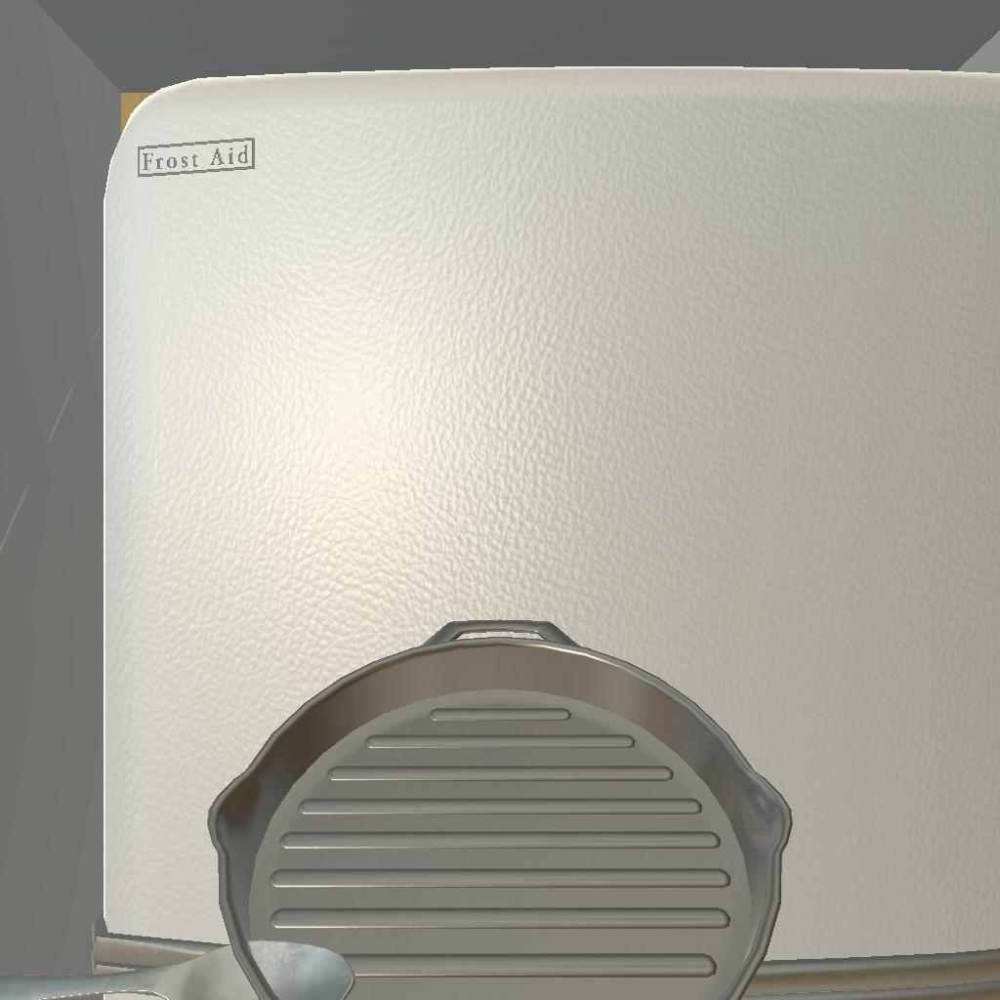
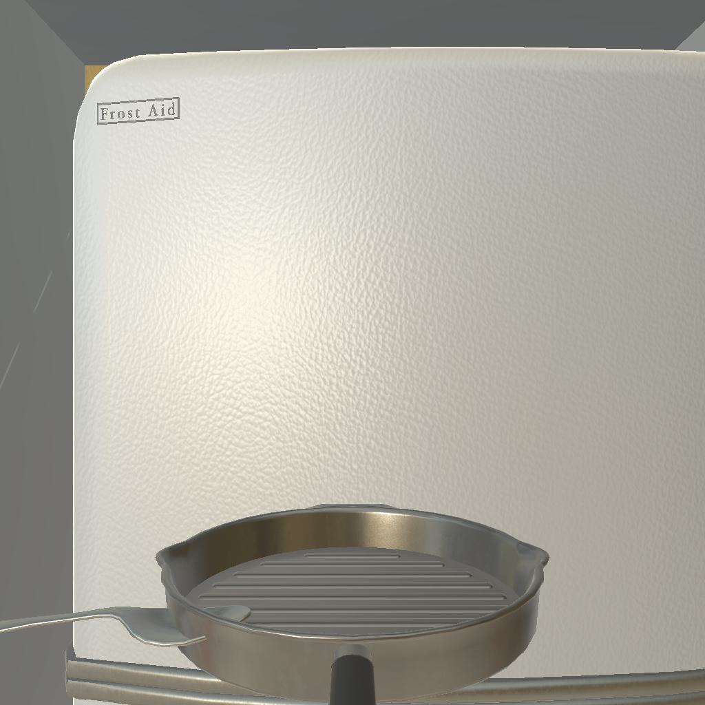
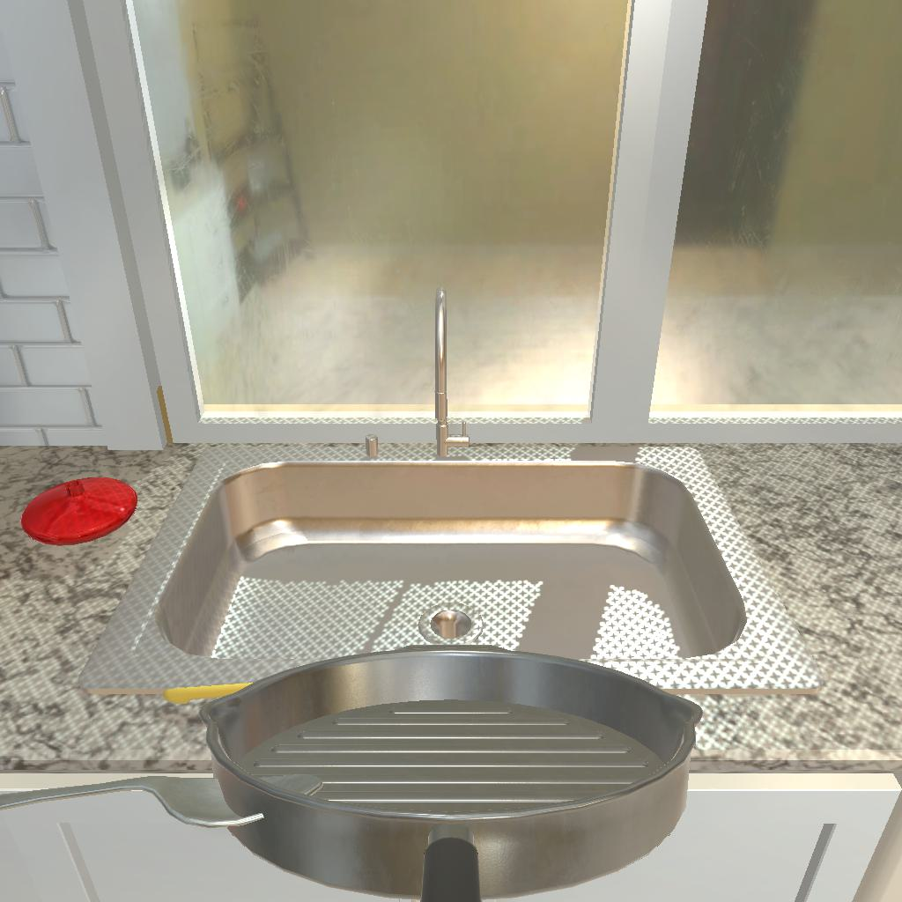

---------------------------------------------------------task: 16---------------------------------------------------------
--------------------------------------------------------------------------------------------------------------------------------------------------------------------
--------------------------------------------------------------------------------------------------------------------------------------------------------------------
Step:--------------------------------------------------------------------------19-------------------------------------------------------------------------------
----------------------------------------
VLM Prompt:
Image1:
Image2:
Image3:
**Instruction**
1. Analyze the provided images to identify all visible household objects and compare the difference between images (e.h. whether the object is opened or not and taken on hand or not), focusing on those relevant to the task description "put a cool pan in sinkbasin."
2. Use the analysis of images and the task hint "The agent must find an object of the desired type, pick it up, go to a fridge, cool the object with the fridge, then find the correct location to place it, and put it down there. The agent does not need to use the fridge button or open the fridge to cool the object, and the agent just needs to do action that is "cool the object with the fridge"." to answer the question: what is the most reasonable action in the choices for the task description "put a cool pan in sinkbasin"?
3. Decide and write the answer using the template: The answer is: (i): , where i is the real number. If there is no desired object in images, search every place based on **Initial Observation** to find the object. And if no one is exactly correct, choose a similar answer.
**Initial Observation**
You are in the middle of a room. Looking quickly around you, you can see cabinet (1-9), countertop (1-3), drawer (1-9), stoveburner (1-4), microwave (1), sink (1), fridge (1), toaster (1), coffeemachine (1), sinkbasin (1), shelf (1-3), garbagecan (1)
**Answer Choices**
(1): go to cabinet 1
(2): go to countertop 1
(3): go to cabinet 2
(4): go to countertop 2
(5): go to drawer 1
(6): go to drawer 2
(7): go to drawer 3
(8): go to drawer 4
(9): go to stoveburner 1
(10): go to drawer 5
(11): go to stoveburner 2
(12): go to stoveburner 3
(13): go to stoveburner 4
(14): go to cabinet 3
(15): go to cabinet 4
(16): go to microwave 1
(17): go to cabinet 5
(18): go to cabinet 6
(19): go to cabinet 7
(20): go to sink 1
(21): go to toaster 1
(22): go to coffeemachine 1
(23): go to cabinet 8
(24): go to drawer 6
(25): go to drawer 7
(26): go to drawer 8
(27): go to shelf 1
(28): go to shelf 2
(29): go to countertop 3
(30): go to shelf 3
(31): go to drawer 9
(32): go to cabinet 9
(33): go to garbagecan 1
(34): put pan 1 in/on sinkbasin 1
(35): clean pan 1 with sink 1
(36): clean pan 1 with sinkbasin 1
(37): examine pan 1
(38): examine sinkbasin 1
**Answer**
Let's think step by step by following the instructions.
----------------------------------------
----------------------------------------
Original Response:
Image Analysis:
- Image 1: Shows a pan on a stoveburner, indicating it might be hot.
- Image 2: Shows the same pan, likely moved from the stoveburner, placed on a countertop, possibly to cool down.
- Image 3: Shows the pan placed inside a sinkbasin, which is the final desired location according to the task description.
Task Hint Analysis:
The task hint indicates that the agent needs to cool the object with the fridge. However, the agent does not need to interact with the fridge directly, such as using a button or opening it.
Considering the objects visible in the images and the initial observation, the pan is already in the sinkbasin in Image 3, which is the final step of the task description. Hence, the most reasonable action would be to confirm that the pan is cool and placed correctly in the sinkbasin.
Answer Choices Analysis:
Among the answer choices, (34): put pan 1 in/on sinkbasin 1 is the closest to the desired action since the pan is already in the sinkbasin, which is the end goal. However, as the pan appears to be already in the sinkbasin, the next reasonable action would be to examine the pan to ensure it is cool, as per the task description.
The answer is: (37): examine pan 1.
----------------------------------------
----------------------------------------
>>> Refine Original VLM Response and Get Pure Action: examine pan 1
----------------------------------------
-----------------------------------------------------------------
Running time: 53.706114292144775 seconds
Total Money: 9.811400000000004
-----------------------------------------------------------------
-----------------------------------------------------------------
Text Observation:This is a cool pan 1.
-----------------------------------------------------------------
UNSUCCEED